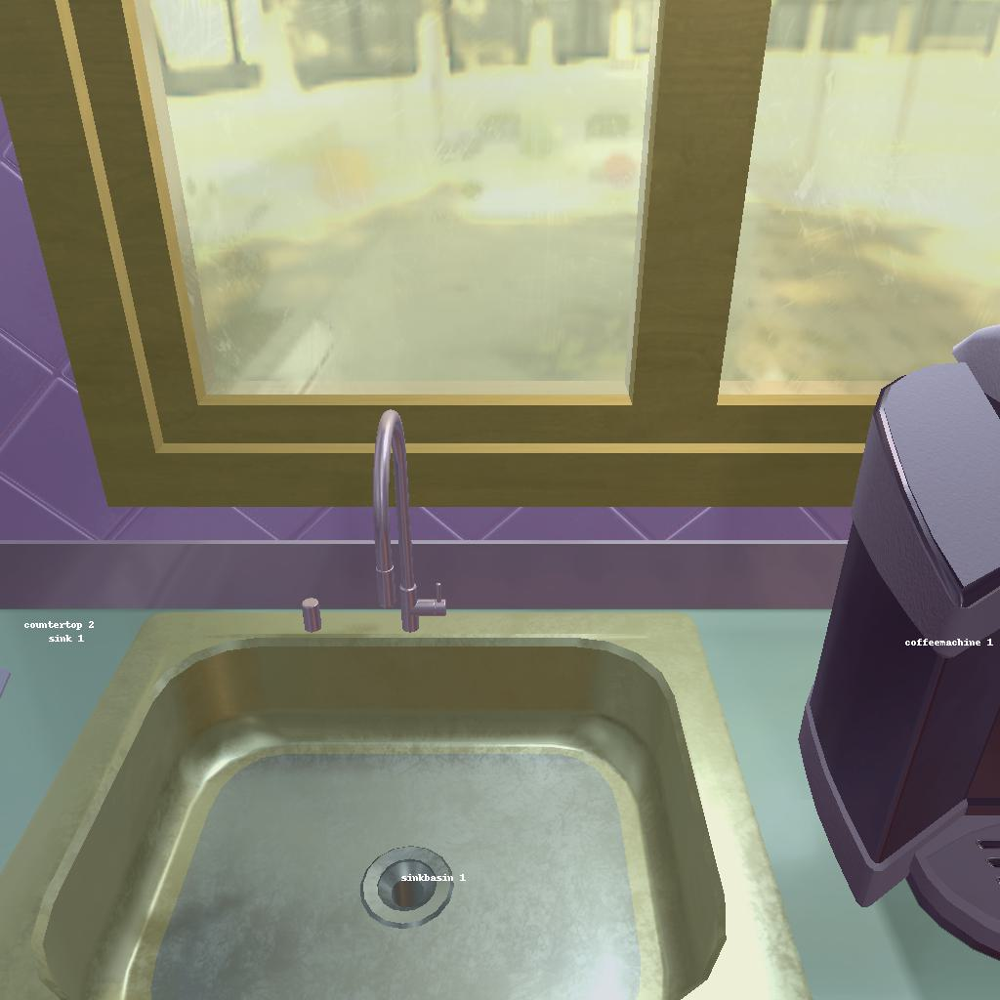

---------------------------------------------------------task: 12---------------------------------------------------------
--------------------------------------------------------------------------------------------------------------------------------------------------------------------
--------------------------------------------------------------------------------------------------------------------------------------------------------------------
Step:--------------------------------------------------------------------------1-------------------------------------------------------------------------------
----------------------------------------
VLM Prompt:
Image1:
Image2:
**Instruction**
1. Analyze the provided image to identify all visible household objects, focusing on those relevant to the task description "clean some tomato and put it in countertop."
2. Use the analysis of the image and the task hint "The agent must find an object of the desired type, pick it up, go to a sink or a basin, clean the object with a sink or basin, and then find the correct location to place it and put it down there. The agent does not need to use soap bottle or faucet to clean the object, and the agent just needs to do action that is "clean the object with the sink or sink basin"." to answer the question: what is the most reasonable action in the choices for the task description "clean some tomato and put it in countertop"?
4. Decide and write the answer using the template: The answer is: (i): , where i is the real number. If there is no desired object in the image, search every place based on **Initial Observation** to find the object. And if no one is exactly correct, choose a similar answer.
**Initial Observation**
You are in the middle of a room. Looking quickly around you, you can see cabinet (1-6), microwave (1), countertop (1-2), coffeemachine (1), toaster (1), sink (1), sinkbasin (1), fridge (1)
**Answer Choices**
(1): go to cabinet 1
(2): go to cabinet 2
(3): go to cabinet 3
(4): go to microwave 1
(5): go to cabinet 4
(6): go to cabinet 5
(7): go to cabinet 6
(8): go to countertop 1
(9): go to coffeemachine 1
(10): go to toaster 1
(11): go to countertop 2
(12): go to sink 1
(13): go to sinkbasin 1
(14): go to fridge 1
**Answer**
Let's think step by step by following the instructions.
----------------------------------------
----------------------------------------
Original Response:
First, we need to clean some tomato, which is likely found in a fridge. This means the first step is to obtain the tomato. The fridge is mentioned in the initial observation, so that's where we should look for the tomato. Therefore, the first action should be (14): go to fridge 1.
After obtaining the tomato, we need to clean it. The task hint specifies that we can clean the object with a sink or sink basin without needing to use soap or faucet. In the image, we can see a sink (sink 1) and a sink basin (sinkbasin 1). Either of these could be used for cleaning the tomato. Based on proximity and ease of use, the sink seems the most reasonable option. Therefore, the second action should be (12): go to sink 1.
Finally, once the tomato is cleaned, we need to put it on the countertop. There are two countertops mentioned in the initial observation (countertop 1 and countertop 2), and both are visible in the image. Since countertop 2 is right next to the sink and would be the most efficient choice to place the cleaned tomato on, the final action should be (11): go to countertop 2.
The answer is: (14): go to fridge 1, then (12): go to sink 1, and finally (11): go to countertop 2.
----------------------------------------
----------------------------------------
>>> Refine Original VLM Response and Get Pure Action: go to fridge 1, then (12): go to sink 1, and finally (11): go to countertop 2
----------------------------------------
-----------------------------------------------------------------
Running time: 11.189310789108276 seconds
Total Money: 5.326969999999998
-----------------------------------------------------------------
-----------------------------------------------------------------
Text Observation:Nothing happens.
-----------------------------------------------------------------
UNSUCCEED